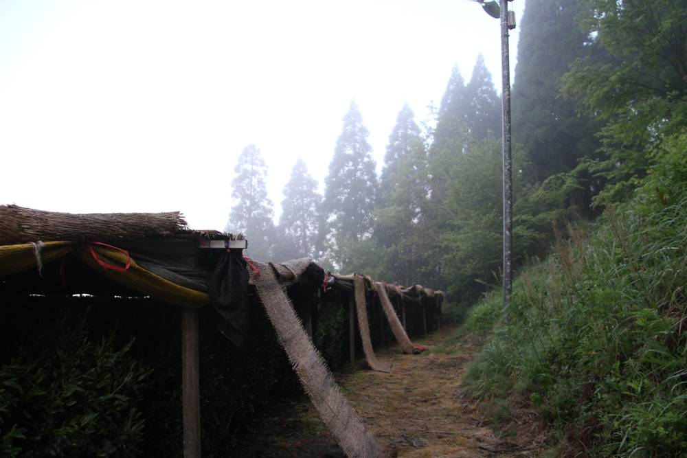

일본 규슈, 영농형 태양광 5년 새 4.4배…전국 설치 농지 24%는 수확 2할 넘게 줄어 정부가 허가 조건 강화

후쿠오카 야메 차밭은 차광 시설에 패널 얹어 월 7만~8만 엔…농수산성 '차광률 30% 미만·연 판매 50만 엔 이상' 새 조건에 업계 "일률 규제 지나쳐"
농지 위에 태양광 패널을 얹어 농사와 발전을 함께 하는 영농형 태양광이 일본 규슈에서 빠르게 늘고 있지만, 농사를 소홀히 하는 사례도 잇따르자 농림수산성이 지난 10월 허가 조건을 강화했다. 일본 전국의 영농형 태양광 농지 일시전용 허가는 2013~2023년도 누적 6,137건으로 2020년도 이후 해마다 800~1,000건씩 늘었고, 규슈는 누적 376건으로 5년 새 4.4배가 됐다. 후쿠오카현 야메시의 한 차 농가는 옥로 재배에 필요한 차광 시설과 태양광을 결합해 지난 3월부터 지역 복지시설에 전기를 대고 월 7만~8만 엔의 판매수입을 얻고 있다. 그러나 설비를 갖춘 농지 5,167건 가운데 1,221건(24%)은 수확량이 2할 넘게 줄거나 생육이 나빴고, 그늘에 강한 관상용 식물이 작물의 3할을 넘었다. 농수산성은 10월 9일 기본방침을 고쳐 작물 판매실적 연 50만 엔 이상, 차광률 30% 미만 등을 새 조건으로 넣었으며, 근거가 된 도쿄대 연구에서는 차광률 27% 논의 쌀 수확이 평균 23% 줄었지만 판매수입을 합친 총수익은 5배를 넘었다. 재생에너지 업계는 "작물에 따라 30% 이상 가려도 잘 자란다"며 일률 규제가 지나치다고 반발하고 있다.
시민에너지 관점
설비 농지의 24%가 수확을 크게 줄였다는 일본의 숫자는, 영농형 태양광이 농사를 핑계 삼은 발전사업이 되면 농민과 지역 모두 신뢰를 잃는다는 경고다. 그렇다고 일률 규제로 묶으면 쌀 수확이 23% 줄어도 총수익이 5배 넘게 늘어난 농가 소득의 길까지 막힐 수 있다. 답은 땅을 일구는 농민과 마을이 발전소의 주인이 되는 것이다. 우리 영농형 태양광 제도도 외부 사업자보다 실경작 농민·마을 조합이 소유할 때 우대하고, 작물별 과학적 기준과 수확량 공개를 함께 갖춰야 한다.
출처: 西日本新聞(Yahoo!ニュース 게재) 2026-11-11 石田剛 원문 보기
九州の営農型太陽光、5年で4.4倍…全国の設置農地の24%は収穫2割超減で国が許可条件を強化
福岡・八女の茶畑は棚がけにパネルを組み合わせ月7万〜8万円…農水省「遮光率30%未満・年販売50万円以上」の新条件に業界は「一律規制は厳しすぎる」
農地の上に太陽光パネルを設けて農業と発電を両立させる営農型太陽光発電が九州で急速に広がる一方、営農をおろそかにする例も相次ぎ、農林水産省は10月に許可条件を厳しくした。全国の営農型太陽光発電のための農地一時転用許可は2013〜2023年度の累計で6,137件に上り、2020年度以降は毎年800〜1,000件ずつ増えている。九州は累計376件で、5年で4.4倍になった。福岡県八女市のある茶農家は、玉露栽培に欠かせない棚がけと太陽光を組み合わせ、3月から地元の福祉施設に電力を供給して月7万〜8万円の売電収入を得ている。しかし、設備を設けた農地5,167件のうち1,221件（24%）は収穫量が2割を超えて減るか生育不良となり、日陰に強い観賞用植物が作物の3割を超えていた。農水省は10月9日に基本方針を改め、作物の年間販売実績50万円以上や遮光率30%未満などを新たな条件に加えた。根拠となった東京大学の研究では、遮光率27%の水田でコメの収穫が平均23%減ったが、売電収入を含む総収益は5倍を超えた。再エネ業界は「作物によっては30%以上遮っても問題なく育つ」として、一律の規制は行き過ぎだと反発している。
市民エネルギーの視点
設備のある農地の24%で収穫が大きく減ったという日本の数字は、営農型太陽光が農業を口実にした発電事業になれば、農家も地域も信頼を失うという警告だ。だからといって一律の規制で縛れば、コメの収穫が23%減っても総収益が5倍を超えた農家所得の道まで閉ざしかねない。答えは、土地を耕す農家と地域が発電所の所有者になることだ。韓国の営農型太陽光制度も、外部事業者より実際に耕作する農家や地域の組合が所有する場合を優遇し、作物ごとの科学的基準と収穫量の公開をあわせて整えるべきだ。
出典: 西日本新聞(Yahoo!ニュース 게재) 2026-11-11 石田剛 原文を読む
日本九州农光互补5年增至4.4倍…全国装设农地24%减产逾两成，政府收紧许可条件
福冈八女茶园将遮光棚与光伏结合，月收7万~8万日元；农林水产省新设"遮光率低于30%、年销售50万日元以上"条件，业界称"一刀切过严"
在农地上方架设光伏板、兼顾农业与发电的农光互补在日本九州迅速增加，但轻视农业生产的情况也接连出现，日本农林水产省已于10月收紧许可条件。全日本用于农光互补的农地临时转用许可在2013~2023财年累计达6,137件，2020财年以来每年增加800~1,000件；九州累计376件，5年间增至4.4倍。福冈县八女市一户茶农把玉露栽培必需的遮光棚与光伏结合，自3月起向当地福利设施供电，每月售电收入7万~8万日元。然而，在已装设备的5,167件农地中，有1,221件（24%）收成减少超过两成或生长不良，耐阴的观赏植物占作物三成以上。农林水产省于10月9日修订基本方针，新增作物年销售实绩50万日元以上、遮光率低于30%等条件。作为依据的东京大学研究显示，遮光率27%的水田稻米产量平均减少23%，但计入售电收入的总收益超过5倍。可再生能源业界则反驳称"部分作物遮光30%以上也能正常生长"，认为一刀切的规定过严。
市民能源视角
日本装设农地中有24%大幅减产，这一数字警示：如果农光互补沦为借农业之名的发电生意，农民和地方都会失去信任。但若用一刀切的规定加以限制，也可能堵住稻米减产23%而总收益却增至5倍以上的农民增收之路。答案是让耕种土地的农民和村庄成为电站的主人。韩国的农光互补制度也应对实际耕作的农民和村级合作社持有的项目给予优待，并同时建立分作物的科学标准和产量公开制度。
来源: 西日本新聞(Yahoo!ニュース 게재) 2026-11-11 石田剛 查看原文
Agrivoltaics in Japan's Kyushu Up 4.4-Fold in Five Years, but 24% of Solar Farmland Nationwide Saw Big Harvest Losses, Prompting Stricter Rules
A Yame tea farm combines shade frames with panels to earn ¥70,000–80,000 a month; industry calls the new "under 30% shading, ¥500,000 annual crop sales" conditions too rigid
Agrivoltaics, which puts solar panels over working farmland, is spreading fast in Japan's Kyushu region, but a string of cases where farming was neglected has led the agriculture ministry to tighten permit conditions in October. Nationwide, temporary farmland conversion permits for agrivoltaics reached 6,137 between fiscal 2013 and 2023, rising by 800 to 1,000 a year since fiscal 2020; Kyushu accounts for 376, a 4.4-fold increase in five years. In Yame, Fukuoka, one tea grower has combined the shade frames needed for gyokuro tea with solar panels, supplying a local welfare facility since March and earning ¥70,000–80,000 a month from power sales. Yet of 5,167 plots with equipment, 1,221 (24%) saw harvests fall by more than 20% or poor growth, and shade-tolerant ornamental plants made up over 30% of crops. On 9 October the ministry revised its basic policy to add conditions including at least ¥500,000 in annual crop sales and shading below 30%; a University of Tokyo study it drew on found rice yields fell 23% on average under 27% shading, while total revenue including power sales rose more than fivefold. Renewable energy groups counter that some crops grow well even with more than 30% shading and call the blanket rule too strict.
Citizen Energy View
Japan's finding that 24% of equipped farmland suffered big harvest losses warns that when agrivoltaics becomes a power business using farming as a pretext, farmers and communities lose trust. Yet a one-size-fits-all rule could also close off a path to farm income that grew more than fivefold even as rice yields fell 23%. The answer is for the farmers who work the land and their villages to own the plants. Korea's agrivoltaics rules should favour projects owned by working farmers and village co-ops over outside developers, alongside crop-specific scientific standards and public harvest reporting.
Source: 西日本新聞(Yahoo!ニュース 게재) 2026-11-11 石田剛 Read the original